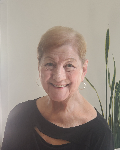
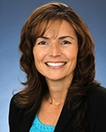
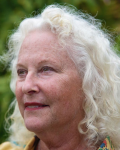
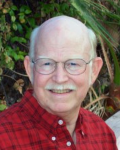
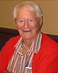
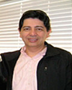

Elvy learned about WPV through a neighbor and started out as a volunteer. She has loved being involved with WPV ever since and joined the staff in 2014. As the primary contact for our members, Elvy enjoys talking with them to coordinate their transportation needs, friendly visits, errands and other service requests. Elvy works closely with our volunteers to match their schedules and interests with client requests. She also enjoys planning WPV social events. Elvy and her family have been residents of Westchester for 20 years. She enjoys entertaining, cooking, music, and movies.
Diane is a marketing professional with over 25 years of experience in brand management and communications in the health and wellness industry. She started at WPV as a volunteer before becoming a consultant overseeing WPV programs, communications and community outreach. A Culver City resident, she is a member of the Rotary Club, a Culver City Education Foundation Ambassador and volunteers at the Culver City Senior Center, She and her daughter moved from New York to California 11 years ago. She received a BA in Economics from Georgetown and an MBA in Marketing from the University of Michigan Ross School of Business.

Joan Holowaty became a Villager during her husband’s terminal illness in 2018. They had recently moved here from the Washington DC area to welcome their first grandchild. Forever grateful for the caring support her family received, she has been a WPV member and volunteer ever since. Professionally, Joan has over 35 years experience as a marketing/ sales executive with Verizon Communications and as founder and President of her marketing consulting firm. Originally from NYC, Joan received her BA in English from Hunter College of City University of New York. Current hobbies include gardening, reading and most importantly, spoiling her two granddaughters!
Carol served as WPV’s Executive Director for 10+ year from 2011 to 2021. During that time, she was instrumental in helping the organization establish roots, grow, expand, and flourish. She developed the WPV CARES (COVID-19 Action Response for Elder Support) Program that ran for nearly 2 years during the pandemic. Over 200 WPV clients received much needed support and assistance from over 300 volunteers through this free program. Carol has helped other villages get started in the L.A. County area and has been a strong advocate for the village model nationally. She serves on the Board of Directors for Village Movement California, a statewide coalition of villages dedicated to bringing visibility to the benefits and value of villages. Carol and her husband are long-time residents of both the Westchester and Culver City area.


Jody joined WPV as a vetted service provider nearly ten years ago and shortly afterwards became an enthusiastic volunteer as well. This was the same year she became involved in navigating and providing care for her ailing mother and became acutely aware of the challenges of findingthe support that was needed to assure safety and pece of mind. Born and raised in the Los Angeles area, she earned her BA in English Literature at CSUN, while working full-time managing a medical practice. She has been a docent at local nature centers, enjoys, gardening, traveling, visiting museums, cooking and never turns down an offer to try out the offerings at a new ethnic restaurant.
Tia is a long time resident of Playa Del Rey, having moved there after graduating from Oregon State University. She is a retiree from a major defense contractor where she was a Senior Manager in Engineering. She has strong program and project management experience and her expertise has been instrumental in helping to grow our organization. Tia is a former member of Westchester Rotary Club and the Westchester Family YMCA Board of Managers, and is a member of the Woman’s Club of Playa del Rey and P.E.O., a philanthropic educational organization.

Peter was born and raised in the Crenshaw District/View Park/Windsor Hills areas of Los Angeles. He attended Loyola High School, USC, and The University of West Los Angeles School of Law. He served as a Deputy Public Defender for 27 years and was granted a service-connected disability retirement in 2004. His passion in retirement has been chorale singing, presently with The Concert Singers of Westchester and The Space Park Chorale of Manhattan Beach. He became aware of WPV in 2018 when he had foot surgery, and became a Member to get rides to the doctor. He was so impressed with WPV’s mission that he became a Volunteer and Donor. He called himself a triple threat….now a quadruple threat, as he has been honored to become a Director of the Board of WPV.

Well-known and respected in the community for his philanthropic activies and contributions, Morrey was instrumental in securing funding for WPV at a critical time in the organization’s startup phase. He also helped make important connections to key leaders in the community that gave the non-profit the support it needed to continue growing.

Ed is a Certified Public Accountant who has been practicing in Playa Del Rey for over 25 years. He is currently a principal in the CPA firm of Stump Davis Greenberg. He has been a past board member of the Southwest Explorer Scouts, Westchester YMCA, and LAX-Westchester Chamber of Commerce. He is a past officer and current member of the Westchester Rotary Club.